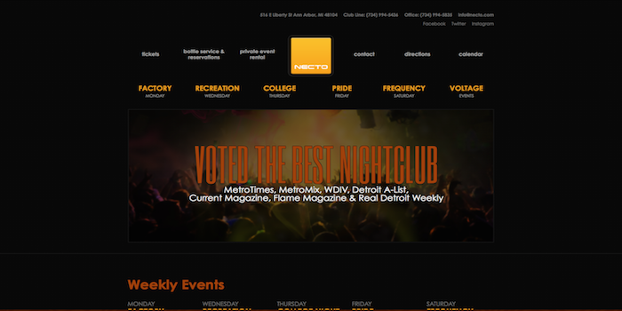
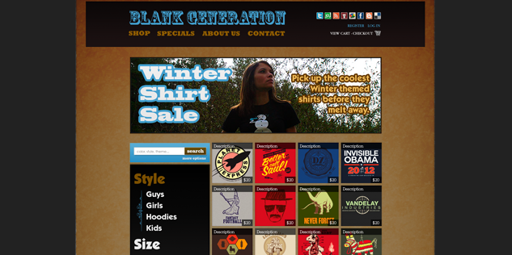
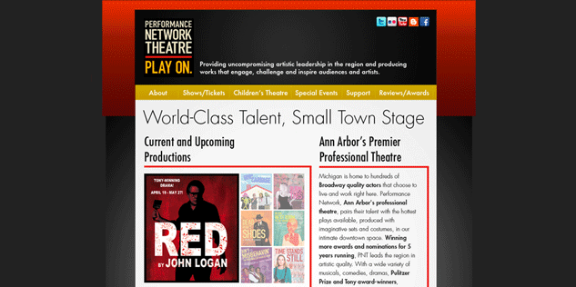

Web Projects
Jetti

Atlas Digital Menus is an interactive web application that replaces printed paper menus in bars and restaurants. As CTO of the company I am responsible for all UX, Visual Design and Front End responsibilities as well as development and oversight of all online marketing materials. I also serve as the project manager for the back end team.
This is my most ambitious project to date and I am excited to have seen this project through from conception to launch in early Fall 2014.
Take a second to view our demo (still in devleopment, pardon the dust...):
Tablet Version
Desktop Version
A smart phone layout is currently in development.
necto.com
In late 2013 I was was brought on to work on the website for the Necto Nightclub, located in Ann Arbor, MI. Their website was inundated with significant issues resulting in poor load times, limited SEO and a dangerously low amount of on page content. Necto's customer base is mostly generated from local colleges and the 18-34 demographic, a young tech savvy crowd. It was important to bring their website to the proper level of development to meet customer expectations in 2014 and beyond.
After conducting a current site analysis, the staff and I worked together to build a meaningful, targeted and responsive experience for their visitors. The management has referred to the performance of the new site as “highly impressive”. I am happy continue to serve as webmaster for the site and provide content strategy consultation for social and other web channels.
Bringing on CCWD has brought a hugely positive change for our website. We completely revamped and rebuilt our site to maximize our visibility and our marketing outreach. Working with Chris (from CCWD) has been a very easy process and we are quite pleased with the results." - Bryan Kostoff / Necto Nightclub
spring215.com

This is the public facing site for the SPRING Creative Group design collective based within the SPARK East business incubator in Ypsilanti, MI.
My goal for this project was to create a fully responsive site that utilized a stripped-down design aesthetic that guided the user to the most critical content.
aromaholic.net

The latest version of Aromaholic.net, a hand made soap and body care company based in Detroit, Michigan, was my first experiment with using both ‘flat’ design principals as well as the Skeleton front-end frame work.
I attempted to achieve the company’s goal of simplifying the sites’ structure and guiding users to the company's Etsy store which serves as their primary point of sale.
vantagepointvisual.com

When the Ann Arbor based video production company Vantage Point Visual realized that their current website was not generating the kind of results they had hoped for, they asked me to review their site’s content, layout, and code to see where improvements could be made.
After inspecting the site, I identified several areas in need of improvement including on and off site SEO issues, un-optimized HTML code, and a lack of fresh content. After implementing small improvements to the sites layout and on-site SEO elements, I helped them to develop a strategy for increasing their online footprint and search engine results page rankings that included aggressive blogging and industry out-reach campaigns.
Design Projects
Clique Up

Clique Up is a social networking game that is played in real world settings that encourages players to connect with each other and developer meaningful friendships.
I designed this game after becoming increasingly disappointed with the quality of on-line relationships I saw my friends 'developing' in their various social networks.
Clique Up is currently in active development.
Screenshots
Welcome Screens Profile Setup Profile and Activity Screens Location Interaction Screens Quest Screens
{kind=link}
{kind=link}
{kind=link}
{kind=link}
{kind=link}
Blank Generation Redesign
{kind=link}
My goal for this redesign of the homepage of the Blank Generation T-shirt company's website was to bring the functionality and overall layout inline with similar companies.
I attempted to remove any unnecessary content that would distract the user from completing their goals. I also simplified the category navigation to provide a casual browsing experience rather than one based on topic specific search.
Food Under Foot Mobile Design
{kind=link}
This task focused design of the mobile version of Food Under Foot’s website attempts to determine user intent and assist them in completing specific tasks when using different web enabled devices.
For example, the site offers information on locating and identifying different plants in the wild. This task is far more likely to be attempted outdoors on a hand held phone rather than a large screen device or desktop computer. A task such as submitting a forum post or using a recipe might be more likely to be attempted in a home setting on a tablet or laptop.
By thinking about a user’s intent and implementing a responsive design, we can provide a better user experience and increase the likelihood of converting customers.
Performance Network Theatre Redesign
{kind=link}
A redesign of Ann Arbor's Performance Network Theatre website.
User Experience Documents
Below is a list of user experience related documents, wireframes and reports.
Documents
- All UX Documents
- Card Sort
- Competitive Analysis
- Site Deconstruction
- Interface Redesign
- User Testing
- Expert Review
- Task Analysis
- Accessibility Inspection
SEO and Web Marketing
Below is a list of SEO and Web Marketing reports.